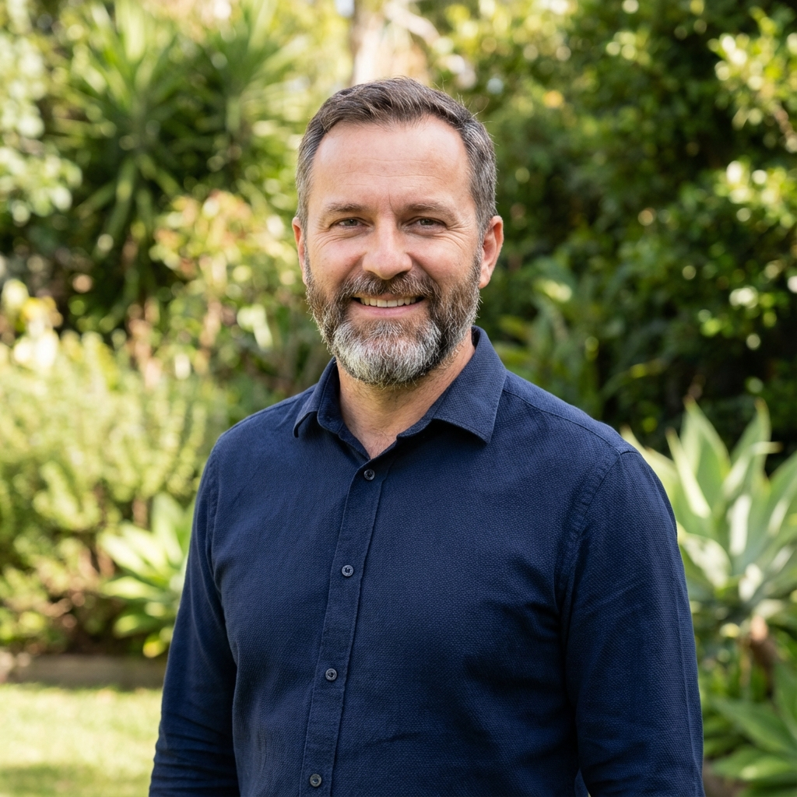
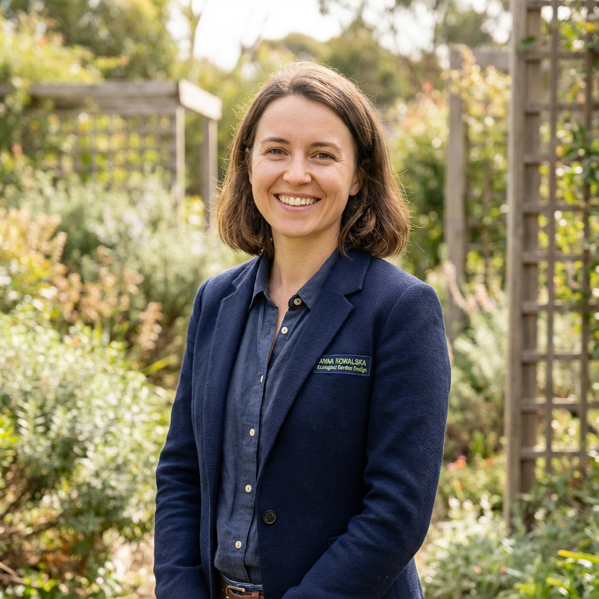
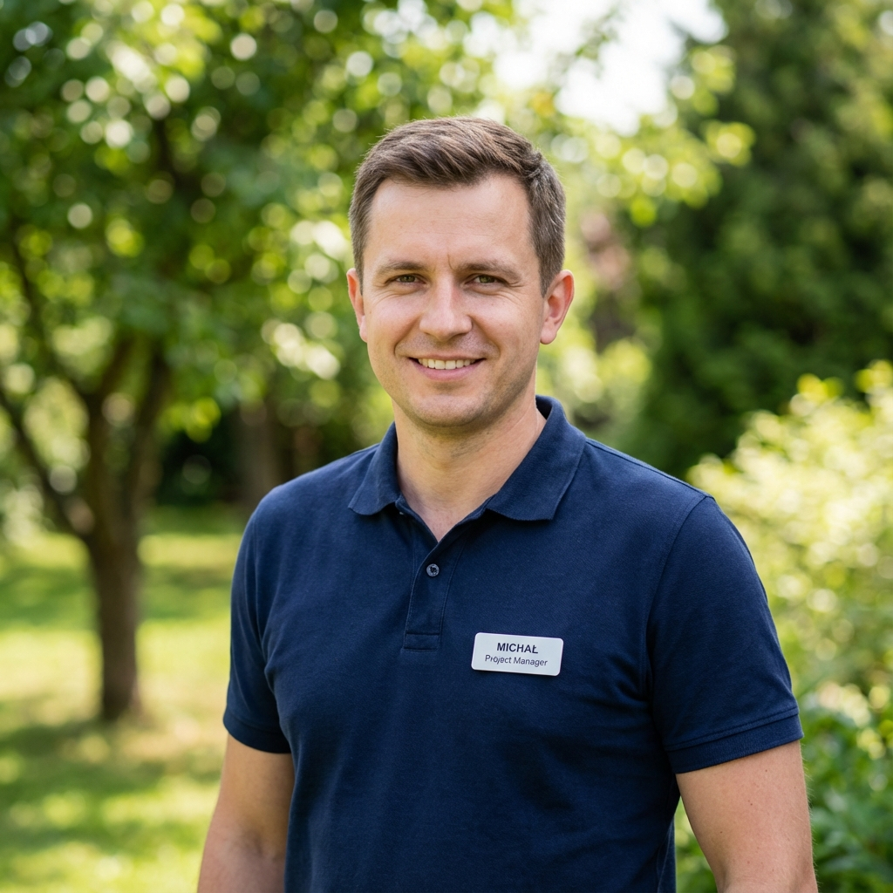

Nasz Zespół
Poznaj Specjalistów
Pasjonaci, którzy tworzą magię w Twoim ogrodzie

Piotr Kowalski
Założyciel & Główny Projektant
Architekt krajobrazu z 15-letnim doświadczeniem. Absolwent SGGW w Warszawie.

Anna Nowak
Projektant Ogrodów
Specjalistka od ogrodów naturalnych i ekologicznych. Miłośniczka roślin rodzimych.

Michał Wiśniewski
Kierownik Realizacji
Odpowiada za nadzór nad wszystkimi projektami. 10 lat doświadczenia w branży.

Maria Zielińska
Specjalista ds. Nawadniania
Ekspert od systemów nawadniania i automatyki ogrodowej. Certyfikowany instalator.